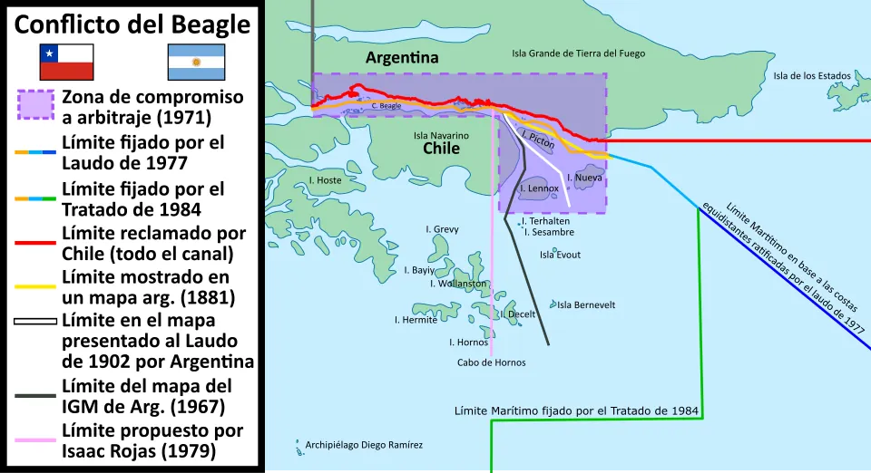

Conflicto del Beagle

La disputa por las islas Picton, Nueva y Lennox, al sur de Tierra del Fuego, nació de interpretaciones distintas del Tratado de Límites con Argentina de 1881. En 1971, ambos países sometieron el caso a un arbitraje de la Corona británica, con una corte de cinco jueces de la Corte Internacional de Justicia. El laudo de 1977 reconoció la soberanía chilena sobre las islas, pero en enero de 1978 el gobierno argentino lo declaró nulo. Ambos países, gobernados entonces por dictaduras militares, movilizaron tropas, y en diciembre de 1978 Argentina preparó una operación militar. Cuando la guerra parecía inminente, el papa Juan Pablo II ofreció su mediación y envió al cardenal Antonio Samoré; en enero de 1979 se firmó el Acta de Montevideo, en la que ambos países se comprometieron a no usar la fuerza. Tras años de negociación, el Tratado de Paz y Amistad se firmó en el Vaticano el 29 de noviembre de 1984: las islas quedaron para Chile y se fijaron los límites marítimos. En Argentina, el acuerdo fue respaldado antes en una consulta popular. El conflicto es recordado como uno de los momentos en que ambos países estuvieron más cerca de una guerra en el siglo XX, y como un ejemplo de solución pacífica de controversias.
Versión para niños
En el extremo sur de Chile, cerca del canal Beagle, hay tres islas llamadas Picton, Nueva y Lennox. Chile y Argentina no se ponían de acuerdo sobre a qué país pertenecían. En diciembre de 1978, los dos países estuvieron a punto de entrar en guerra. Entonces, el papa Juan Pablo II ofreció ayudar como mediador. Gracias al diálogo, en 1984 ambos países firmaron un Tratado de Paz y Amistad y el conflicto terminó.
Para maestros
Nivel sugerido: 2° medio
Objetivo: Analizar el conflicto del Beagle como un caso de tensión limítrofe resuelto mediante la mediación y el derecho internacional.
Preguntas para la clase:
- ¿Por qué tres islas pequeñas podían ser tan importantes para ambos países?
- ¿Qué papel cumplió la mediación papal para evitar la guerra?
- ¿Qué ventajas tiene resolver los conflictos entre países por vías pacíficas?
Actividad (20–30 min): En un mapa del extremo austral, los estudiantes ubican las islas en disputa y las zonas marítimas involucradas. Luego, en grupos, elaboran una línea de tiempo del conflicto entre 1971 y 1984 y explican qué permitió llegar a la paz.
Fuentes sugeridas: Memoria Chilena; Biblioteca del Congreso Nacional (BCN); Biblioteca Nacional Digital.
Objetivos de Aprendizaje (Currículum Nacional)
- 2° medio · HI2M OA 24 Analizar y debatir sobre los desafíos pendientes para el país … y fortalecer la relación con los países vecinos
- 3° o 4° medio (Mundo global) · FG-MGLO-3y4-OAC-06 Analizar algunos conflictos internacionales que involucran a Estados nacionales, sociedades o grupos, explicando sus contextos y posibilidades de resolución
Revisión humana pendiente. Cómo se revisa · Reportar un error
Cómo citar: Historia de Chile. (2026). Conflicto del Beagle. En Historia de Chile: atlas y línea de tiempo. https://moises-salgado.github.io/historia-de-chile/momento/conflicto-del-beagle.html